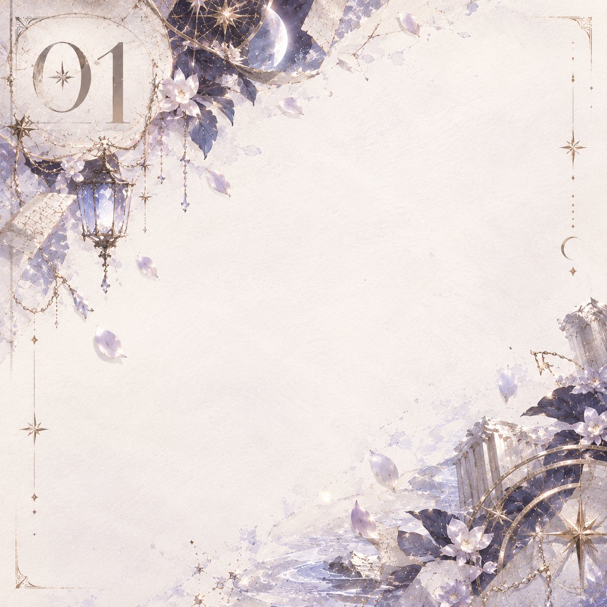
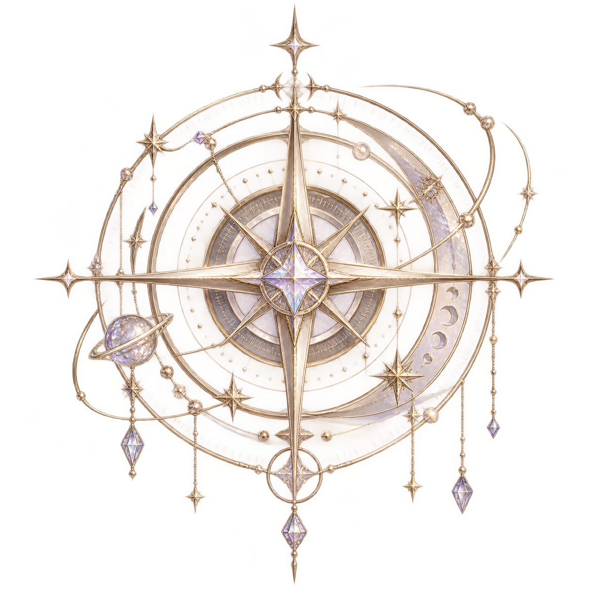
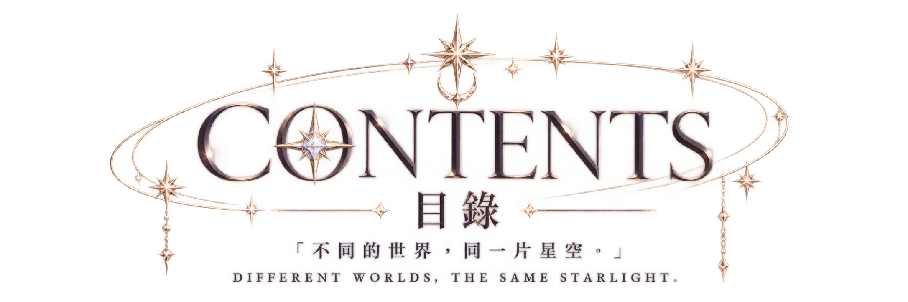
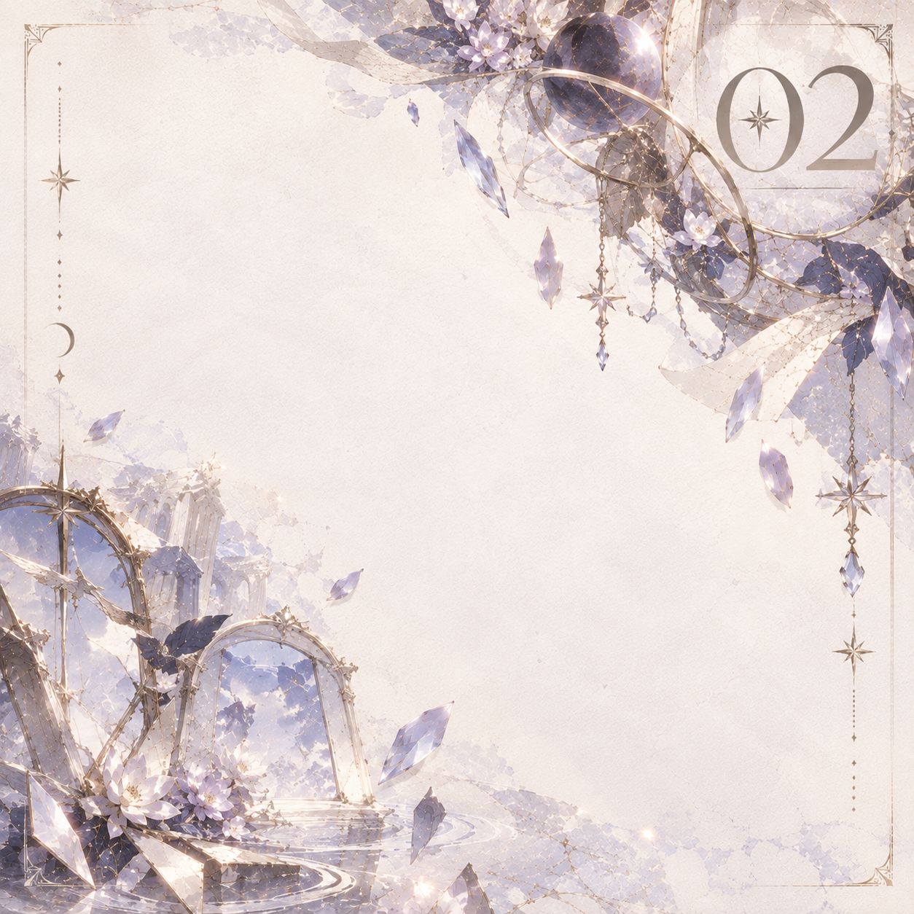
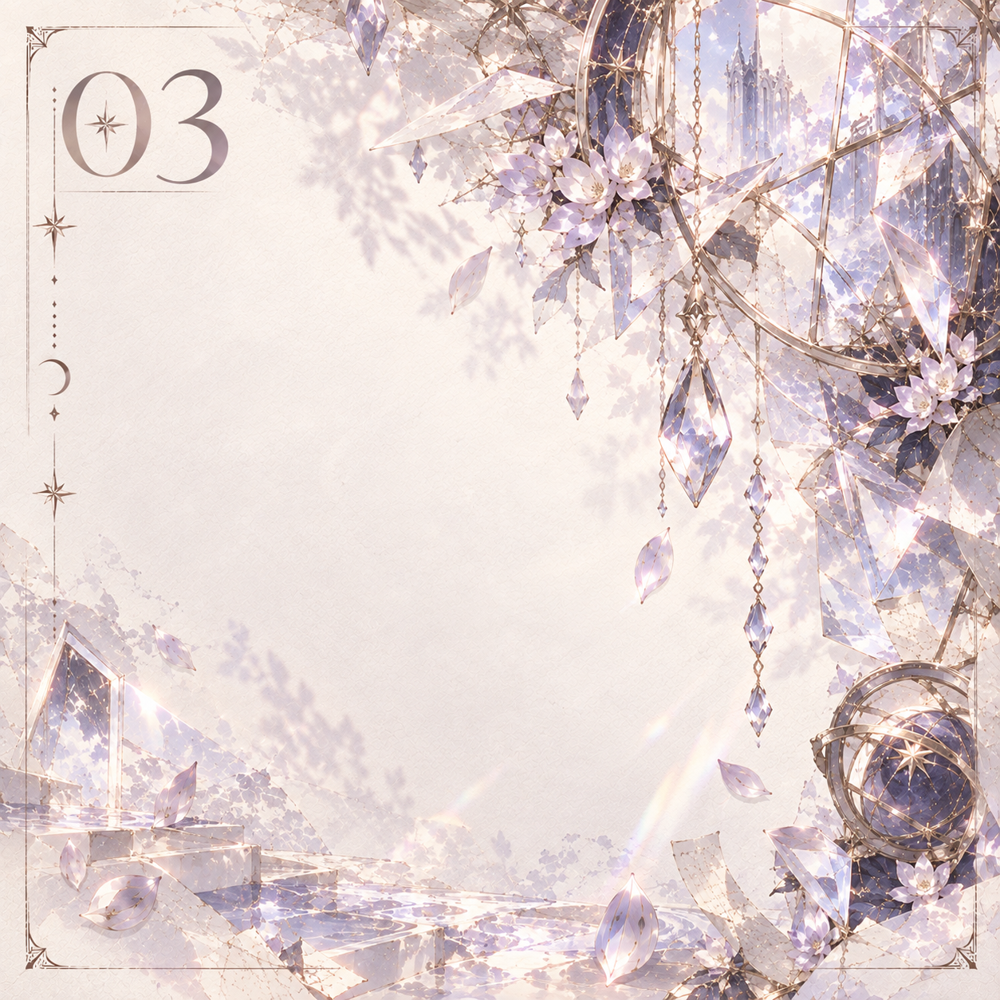
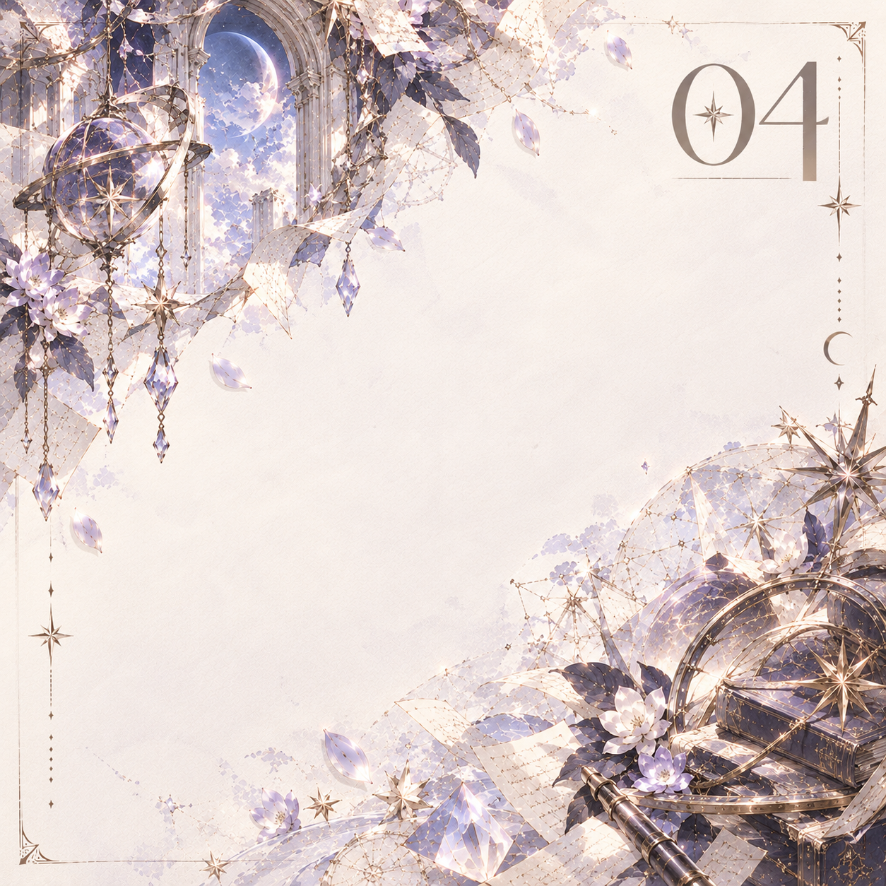
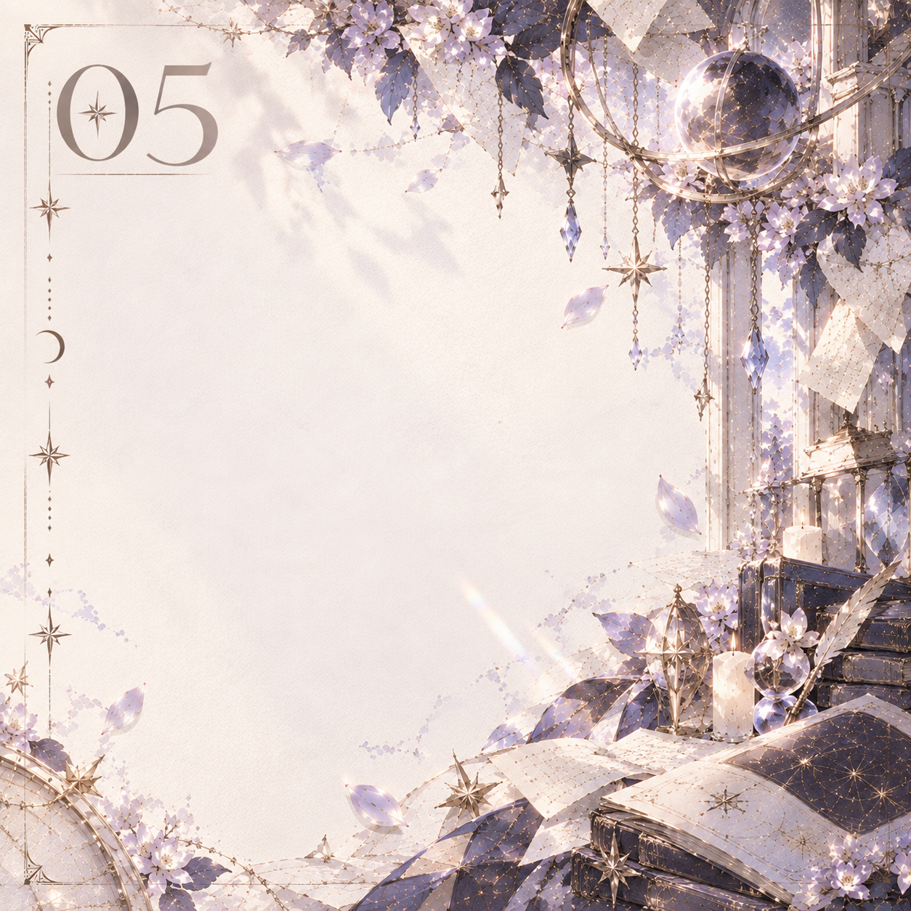
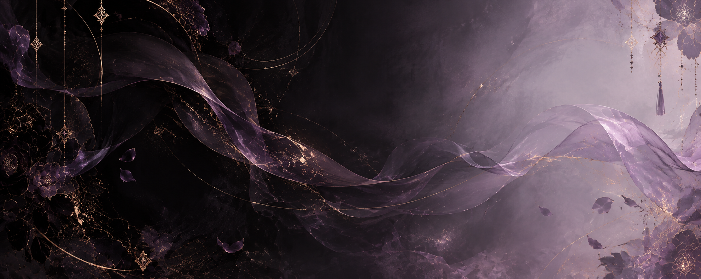
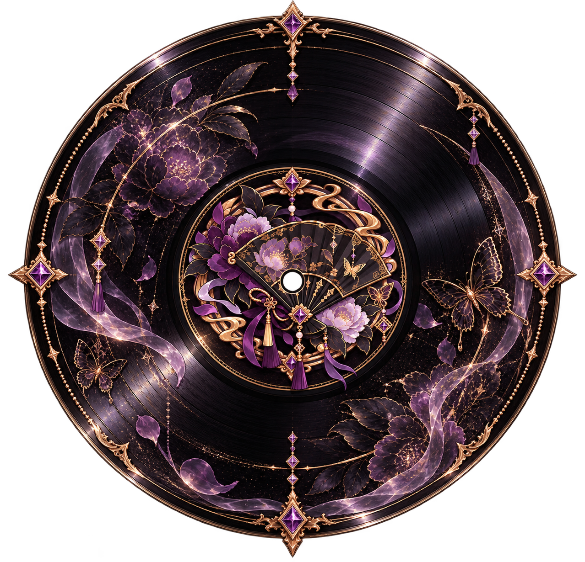
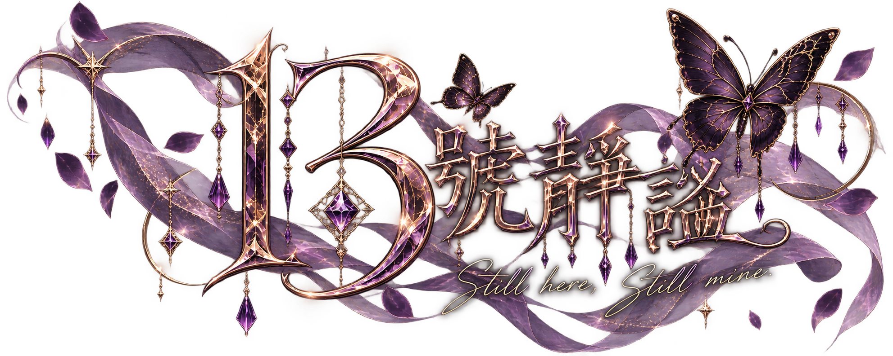

沉星之岸
十三號當舖 × 冥界
ENTER →





十三號當舖 × 冥界
ENTER →
架空世界 × 魔法奇幻
ENTER →
現代都市 × 奇幻
ENTER →
東方 × 古今幻想
ENTER →
現代都市 × 人物故事
ENTER →


「有些東西一旦典出去，
就未必還贖得回來。」
「她很少要求誰留下。」
關心被藏進倒茶、留燈， 與那些若無其事的提醒裡。 她越是在意，往往越顯得若無其事。
左肩近心口
淡黃色印記
有些東西被留在身邊太久， 久到它們也開始替主人記得。
她替來客收下執念與代價， 卻很少談起自己究竟留在這裡多久。
有些字跡沒有隨歲月褪去。 她不常提起，而它始終被留下。


